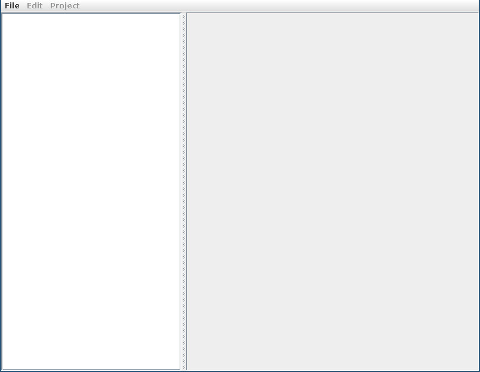
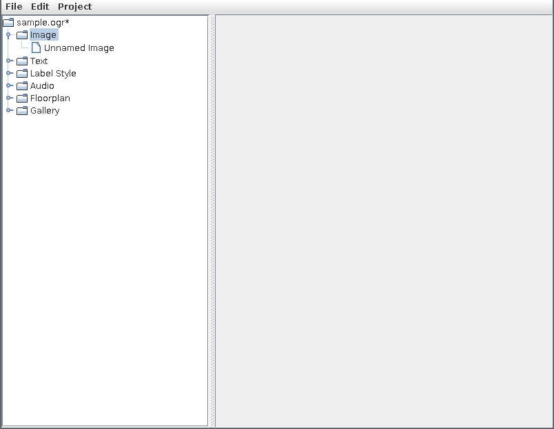
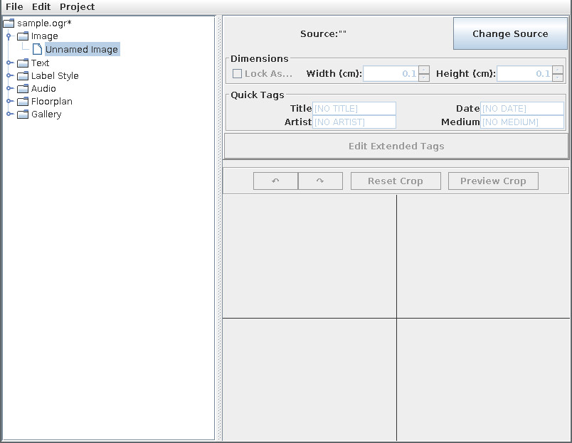
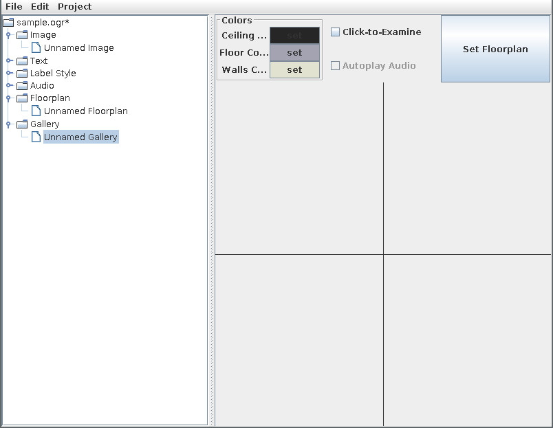
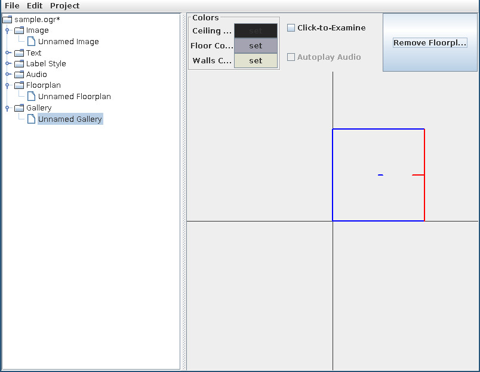
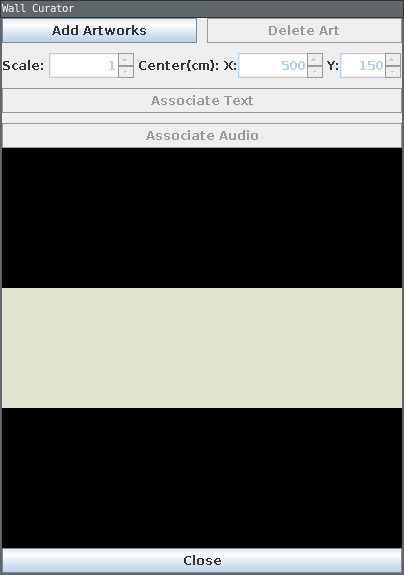
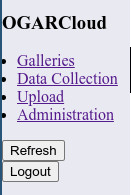
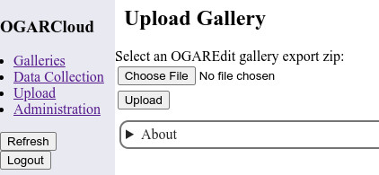
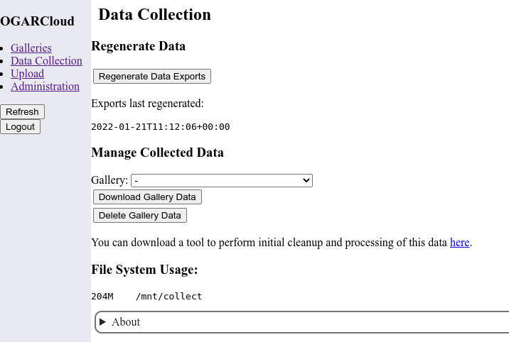
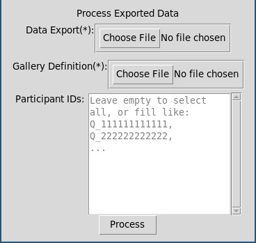

This document walks through the concepts and process to create and run a study with OGAR. Each tool is incompletely covered, but this tutorial should help explain how the different tools in OGAR work together.
OGAR, or the Open Gallery for Arts Research, is a platform for researchers to use navigable virtual art galleries in their research. OGAR is a system composed of multiple services and tools which work together to design and serve galleries, and to record user actions in galleries. The main components are:
The workflow in OGAR is typically:
"Create a gallery in OGAREdit" → "Upload the gallery to OGARCloud" → "Embed the JavaScript provided by OGARCloud in a webpage or Qualtrics survey" → "Run the survey" → "Download and process the collected data"
To begin, you need the following software:
In addition, you need access to the following online services:
The full documentation for OGAREdit is available in the USERMANUAL.html that is packaged with OGAREdit.
OGAREdit is a curation tool that runs on your computer. You need to have Java installed to use this tool.
The tool creates files that end in ".ogr". An ogr file stores all of the resources associated with a project, including texts, images, audio, and floorplans. In addition, ogr files store galleries, which are combinations of a floorplan with other resources. In OGAREdit, resources in galleries are stored 'by reference'. This means that, for example, if you use an image in two galleries, then a change to the image will affect both galleries. If you want to reuse resources between galleries, consider if you should duplicate the resource first, so that each gallery has its own copy. Used correctly, the 'reference'-style access can allow you to build a library of base resources from which you can quickly build new galleries.
To use OGAREdit, you will first create the resources you want to use in your gallery. Then, you will combine all of your resources in your gallery. Finally, you export the finished gallery for use in OGARCloud.
First, find your copy of OGAREdit. Then, launch OGAREdit by running OGAREdit.bat.
You should be greeted with a window that looks like this:
To begin, create a new project database with File/New. This database will store all of our resources (e.g. Images, Floorplans, and Galleries), but it starts out empty.
To create a new image, right-click on Image and press 'Create'. This will create a new Unnamed Image.
To set the appearance of this image, select it and then press the "Change Source" button. Use the file picker to select an image.
To create a basic gallery in OGAREdit, we just need images and a floorplan. We now have an image, so we just need to create a floorplan. Right click on 'Floorplan' in the left-hand tree menu, and press 'Create'. This new floorplan has a basic configuration, so we don't need to change it for this example.
Now, we create a gallery. Right click on 'Gallery' in the left-hand tree menu and press 'Create'.
Select the new Unnamed Gallery. The gallery editor should now appear in the right-hand side of the screen.
Press 'Set Floorplan', and use the resulting popup to select the floorplan we created previously (finalize your selection by pressing 'Select' in the popup).
Next, mouse over the floorplan view in the gallery editor until a wall is highlighted as shown below. A wall should be red, with a small indicator facing towards the inside of the gallery. The indicator shows which side of the wall you are modifying, so we want to modify the side on the interior of the gallery. Then, click to select that wall.
When you click on a wall, a "Wall Curator" popup will appear. This allows you to place artworks on this wall. Press "Add Artworks" in this popup.
After you press "Add Artworks", select the image from earlier in the Image Selector popup. This image should appear on the wall. Close the Wall Curator popup.
Finally, press "Project/OGAR Gallery Export" to export the selected gallery. You will have to choose a location to place the exported gallery. After a few seconds, the export will appear as a zip file beginning with "OEG" and ending with ".zip" in the selected directory.
The full documentation for OGARCloud is available in the 'About' sections at the bottom of each page in OGARCloud.
OGARCloud performs four functions:
The link to access OGARCloud, and an access key, should be provided by whoever set up OGARCloud for you. Once you log in, the OGARCloud interface is navigated via the sidebar.
From the top, "Galleries" allows you to preview or access embedding data from uploaded galleries.
"Data Collection" allows you to download recorded participant data.
"Upload" allows you to upload a new gallery created by OGAREdit.
"Administration" allows you to change your access key.
"Refresh" refreshes information about galleries and data. "Logout" ends your session.
Uploading a gallery is straightforward. You should have a zip file created by OGAREdit and beginning with "OEG" on your computer (if you don't, see "Creating a Simple Gallery", above).
Begin by navigating to the "Upload" page with the sidebar menu.
Press "Choose File" and select the file beginning with "OEG" on your computer. Then, press "Upload".
Once the upload succeeds, you should be able to see it as an entry in the "Galleries" page. On the "Galleries" page, you can press "Preview" to view your uploaded gallery.
The OGAR Client can be embedded in most webpages. To access JavaScript for a specific gallery, press "Download" under "Get Embeddable JS" in the OGARCloud Galleries page.
This JavaScript can be embedded in a couple of ways. It is currently the most seamless when embedded in a Qualtrics survey. You can use the Add JavaScript option to include a gallery in a Qualtrics Text Question. When the JS Editor appears, replace everything in the JS Editor with the contents of the "Get Embeddable JS" result.
In order to correlate OGAR data with Qualtrics Data, you should set the Qualtrics Embedded Data key "Cust_UniqueID" to "None" before the question including the OGAR JavaScript. The OGAR Client will record its identifier in the "Cust_UniqueID" Embedded Data, if it exists, allowing you to correlate a Qualtrics User with an OGAR User.
In its most basic form, however, you can include the Embeddable JS in a webpage inside of a pair of <script></script> tags. You should take special care to call OGARgallery.recep.cleanup() when the user navigates away from the page.
Once OGARCloud has collected data you want to process, wait 10 minutes. Then, navigate to the "Data Collection" page of OGARCloud and press "Regenerate Data Exports". Wait for 15 minutes, then refresh the page.
At this point, the subheader "Manage Collected Data" should have a dropdown menu including the name of the gallery you collected data for. Select it, then press "Download Gallery Data".
Next, download the tool from the link at the bottom of the "Manage Collected Data" section. You don't need to redownload this tool everytime you process data.
Finally, navigate to the "Gallery" page of OGARCloud, and download the "gallery.json" under the "Get Gallery Definition" column for the gallery whose data you downloaded.
Now, you have a data .zip file, the tool in ogarcloud_process.zip, and a gallery.json. Unzip ogarcloud_process.zip, and run the included "process.py". You should see this interface:
Select your data export (the zip) and gallery definition (gallery.json), and press 'Process'. This will result in a zip file including CSVs of OGAR user data. Analyze this data in the context of your study. Note that README.txt in ogarcloud_process.zip includes some information about interpretting the resulting CSVs.